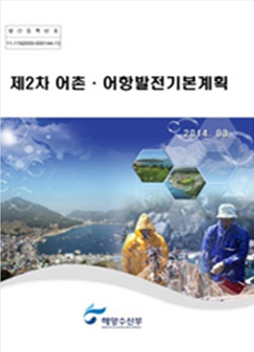
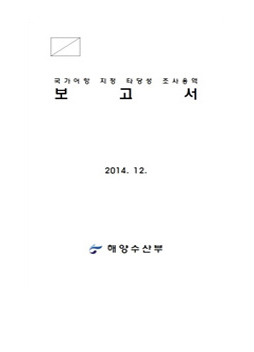
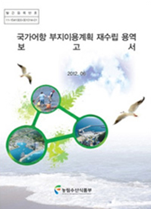
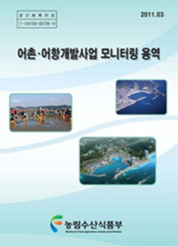
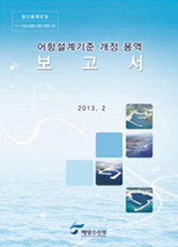
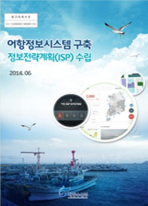
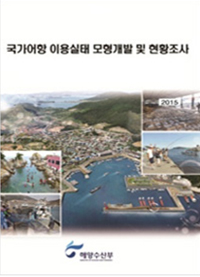
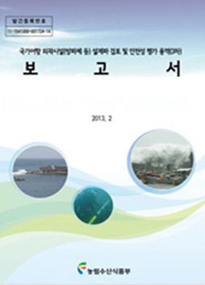

어촌·어항 조사연구
- 홈
- 사업소개
- 국제협력 및 기술교육
- 어촌·어항 조사연구
주요성과
어항정책 수립을 위한 기초자료로 활용
- 어항 통계자료의 일관성, 연속성, 신뢰성을 제고하여 어항개발사업의 성과 평가 체계를 구축을 지원하고 어항 정책 수립에 활용
어항정보시스템과의 연계를 통한 다양한 활용 가능성 제고
- 어항관리시스템과 연계하여 어항 관계자들의 업무 효율성을 제고하고 어항 이용자에 대한 디지털 정보를 제공
- 공공정보의 개방, 공유를 통해 다양한 활용 가능성 제고
국가어항 기초자료 보고서
관련자료
-

어촌어항발전기본계획
-

국가어항지정타당성 조사
-

국가어항 부지이용계획 재수립
-

국가어항 부지이용계획 재수립
-

어항설계기준개정
-

어항정보시스템 구축 정보전략계획(ISP) 수립
-

국가어항 이용실태 모형개발 및 현황조사
-

구각어항 및 외곽시설 설계파 검토 및 안정성 평가